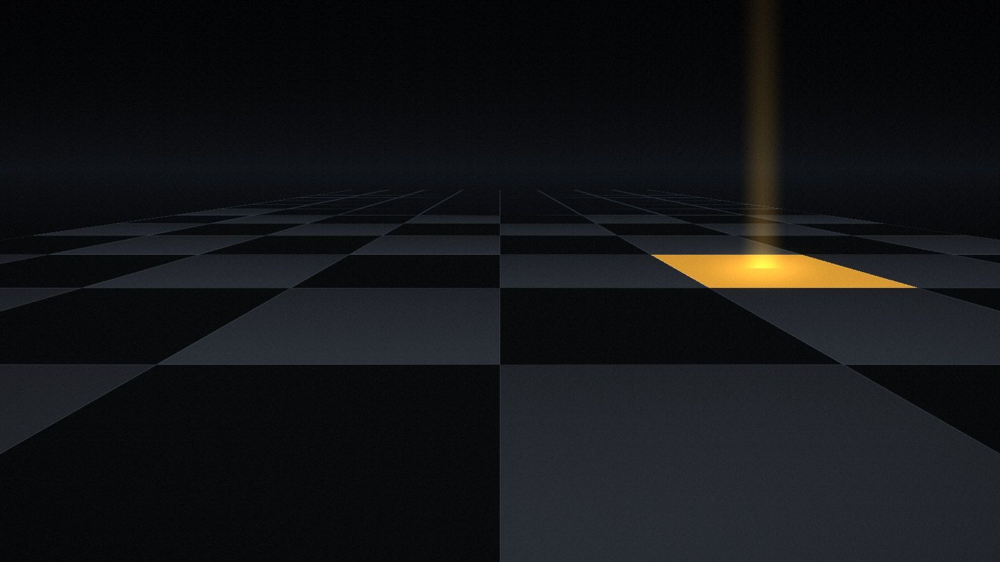
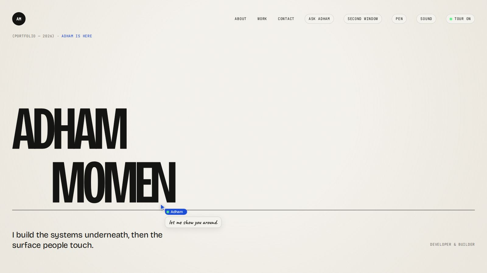
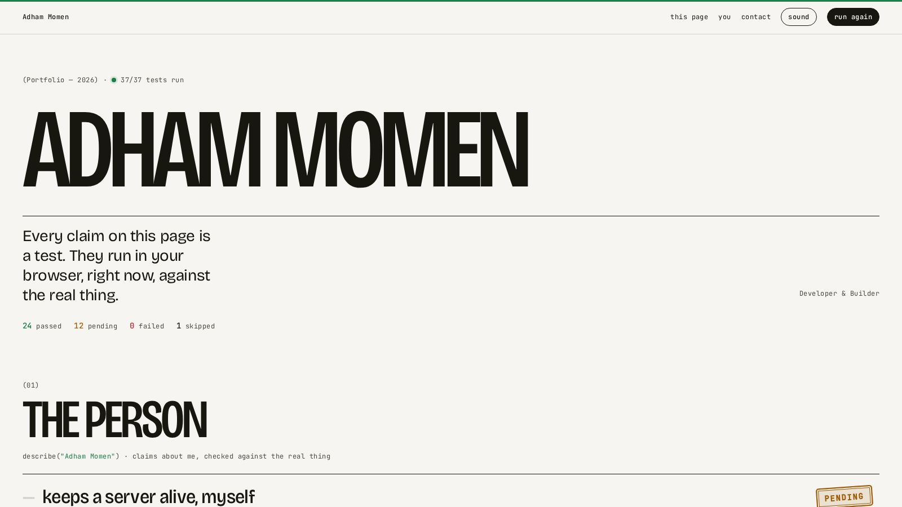

Ordium
The big one, built end to end.
Platform · Server

Developer & Builder · Independent
I build the systems underneath and the surfaces people touch: platforms, servers, products and interfaces, from the first line to the box they run on.
Scroll to explore
Selected work04 projects · 2026
The big one, built end to end.
Platform · Server
A side idea that refused to leave.
Product

A portfolio bigger than a browser window.
Experiment · Browser APIs

Every claim is a test that runs in your browser.
Experiment · Testing

Statement
Platforms, servers, products and interfaces, from the first line to the box they run on.
Most of a system should disappear. The few parts people feel should be impossible to miss.
01 / 03
Products from the database to the button: the API, the data model, sign-in, billing and the realtime parts in between.
02 / 03
The box it all runs on. I keep my own servers alive, deploy them, automate them and watch them.
03 / 03
The surface people touch: product design, creative development, WebGL and motion, like the page you are scrolling.
Flagship · In progress
The big one. A platform I am building end to end, running on a server I keep alive myself.
DHAM MOMEN
Systems, made tangible. Write to me